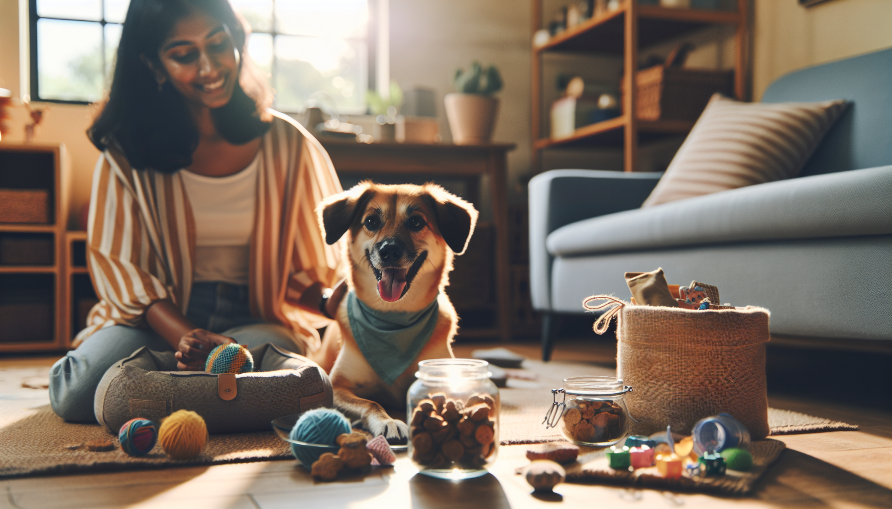

Every dog owner knows the feeling: you look at your pup’s sweet face and instantly want to give them the world. The good news is that spoiling your dog does not have to mean overspending on expensive gadgets, luxury treats, or overflowing toy bins. In reality, dogs are happiest when they feel loved, included, comfortable, and mentally engaged. That means some of the best ways to pamper your furry friend are also some of the most affordable.
If you have been wondering how to spoil your dog without breaking the bank, you are in the right place. Whether you are a devoted pet parent, a thoughtful gift shopper, or simply someone who loves finding smart ways to make dogs happy, there are plenty of creative and budget-friendly options to explore. From DIY enrichment to personalized accessories, small touches can make a big difference in your dog’s daily life.
Let’s dive into practical, heartwarming ways to treat your pup while keeping your budget happy too.
One of the easiest and most meaningful ways to spoil your dog is completely free: give them more of your attention. Dogs crave connection more than anything. A little extra quality time can feel more special to your pup than an expensive new purchase.
Try adding a few simple rituals to your routine. Take a slightly longer walk, spend 10 minutes playing tug in the living room, or sit together for a cuddle session after dinner. If your dog enjoys adventures, even a trip to a new park or a different walking route can feel like a huge treat.
For dogs, your presence is priceless. If you want to spoil them on a budget, start there.
Store-bought treats can add up quickly, especially if your dog has a favorite brand or needs special ingredients. Homemade dog treats are often much more affordable, and they let you control exactly what goes into your pup’s snacks.
You do not need fancy ingredients to make something your dog will love. Many simple recipes use pantry staples like pumpkin puree, oats, peanut butter, banana, sweet potato, or plain yogurt. With just a little prep, you can create a batch of treats that lasts for days or even weeks.
Some easy low-cost homemade treat ideas include:
Always double-check that ingredients are safe for dogs and avoid anything containing xylitol, chocolate, grapes, raisins, onions, or excessive salt. A homemade treat jar on the counter is a simple way to make your dog feel spoiled every day without spending much at all.
Dogs do not care whether their toy came from a boutique pet shop or your recycling bin. What matters most is that it is fun, safe, and engaging. If you are looking for cheap ways to spoil your dog, DIY toys and enrichment activities are a fantastic option.
Mental stimulation is just as important as physical exercise. Enrichment games help prevent boredom, reduce destructive behavior, and make your dog feel fulfilled. Best of all, many enrichment ideas use items you already have at home.
Rotating toys instead of buying new ones all the time can also make old favorites feel exciting again. Set aside a few toys and reintroduce them a week later. To your dog, it can feel like a whole new surprise.
Spoiling your dog is not always about play. Comfort matters too. A few inexpensive upgrades can make your dog’s everyday environment feel more cozy and secure.
You do not need to buy a luxury pet bed to make your pup feel pampered. Add a soft blanket to their favorite resting spot, create a quiet corner for naps, or refresh their sleeping area with washable bedding. If your dog loves warmth, move their bed near a sunny window during the day. If they like to be close to you, place a comfy mat near your desk or couch.
Budget-friendly comfort ideas include:
Small changes can help your dog feel extra cared for, and those thoughtful details are often what make a house feel like home.
If you want to spoil your dog in a way that feels unique and memorable, personalized pet products are a wonderful choice. They add charm, personality, and meaning without requiring a huge budget. A custom bandana, pet tag accessory, or personalized keepsake can make an everyday item feel much more special.
This is also a great option for gift shoppers. If you are shopping for a dog birthday, gotcha day, holiday, or just because, personalized items show thoughtfulness and love. They are practical, adorable, and often more affordable than people expect.
Look for personalized pet products that are both cute and useful, such as:
These kinds of gifts can help your dog stand out while making everyday routines feel a little more festive. Best of all, they create sweet memories for you too.
You do not need a pricey pet resort or luxury outing to create exciting experiences for your dog. Some of the best adventures are simple, local, and low cost. Dogs love novelty, so even a small change in routine can feel like a big reward.
Try planning mini adventures that fit easily into your week. Visit a dog-friendly beach, stop by a pet store for a quick sniff-around, or enjoy a picnic in the park with fresh water and a few treats. If your dog enjoys social time, organize a playdate with a friend’s pup instead of paying for daycare or special events.
Low-cost outing ideas include:
Experiences can be just as rewarding as physical gifts, and they often strengthen your bond in the process.
Spoiling your dog on a budget does not mean buying the cheapest option every time. It means spending intentionally on things that truly improve your dog’s life. Focus on value, durability, and enjoyment rather than impulse purchases.
Before buying something new, ask yourself a few simple questions. Will my dog actually use this? Is it safe and practical? Can I find a version that is affordable but still high quality? Sometimes one well-chosen item brings more happiness than several forgettable purchases.
Here are a few smart budget tips for dog owners:
When you prioritize what your dog genuinely loves, your money goes further and your pup still gets plenty of joy.
If you have ever worried that spoiling your dog means spending more than you should, take heart: your pup does not measure love by price tags. A homemade treat, a favorite walk, a cozy blanket, or a personalized accessory can mean just as much as a luxury splurge. In many cases, the most memorable things you give your dog are your time, attention, and thoughtfulness.
Learning how to spoil your dog without breaking the bank is really about being intentional. Choose simple pleasures, get creative with what you already have, and look for affordable ways to make your dog feel celebrated. Whether you are treating your own pup or shopping for a dog-loving friend, there are so many sweet ways to show big love on a small budget.
If you are ready to add a special touch to your dog’s day, shop personalized pet products at SnoutAndAbout on Etsy.